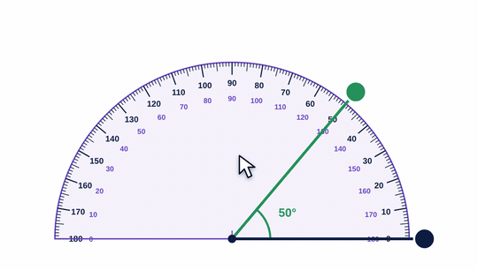

1-minute video · captions on screen
What it is
A half circle marked 0 to 180 degrees. It has two scales, running in opposite directions.
Students first meet angles as turns. Degrees are the unit for measuring them: a right angle is 90°, a straight line is 180°.
Measuring an angle
- Estimate first. Is it smaller or bigger than a square corner (90°)?
- Put the center mark exactly on the corner of the angle.
- Line up one arm with the 0 line.
- Follow the scale that starts at 0 on that arm. Read where the other arm crosses.
- Check against your estimate.
How to use the tool
- The protractor's center sits on the corner of the angle.
- One arm lines up with 0.
- Drag the green arm. Read the scale that starts at 0.
- Hide the protractor to practice estimating first.

Try this with your class
Show an angle. Students estimate, then measure.
- Everyone writes a guess first.
- Measure together. Who was closest?
- Ask: if someone said 120°, what did they do? (Read the other scale.)
Watch for
Reading the wrong scale.The most common mistake. The estimate catches it: a small angle can't be 120°.
Bottom edge on the corner.The center mark goes on the corner, not the edge of the plastic.
Arms too short to reach the numbers.Extend them with a ruler before measuring.
Try it yourself
Based on: Oak National Academy, measuring angles with a protractor